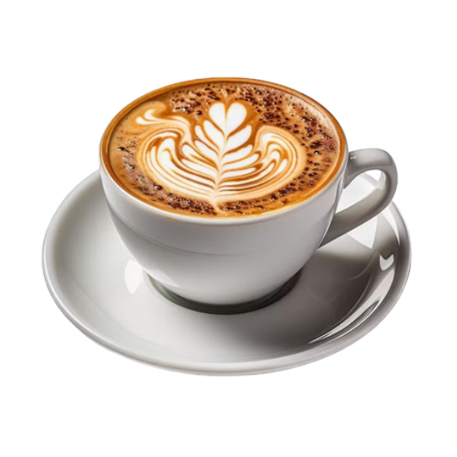
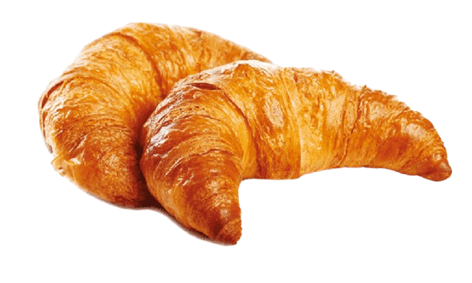
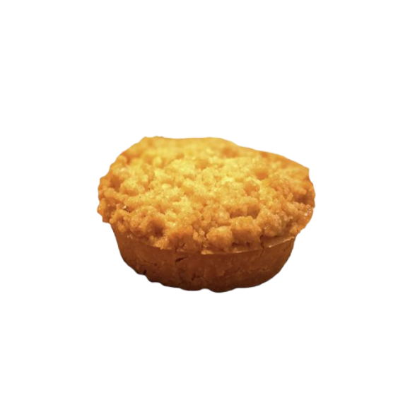

MENU
Artisan Coffee: From classic espresso to seasonal specialties, we’ve got a brew for every taste.

Fresh Pastries: Baked daily, our pastries are the perfect companion to your coffee.

Light Bites: Enjoy our selection of sandwiches, salads, and daily specials crafted with local ingredients.
